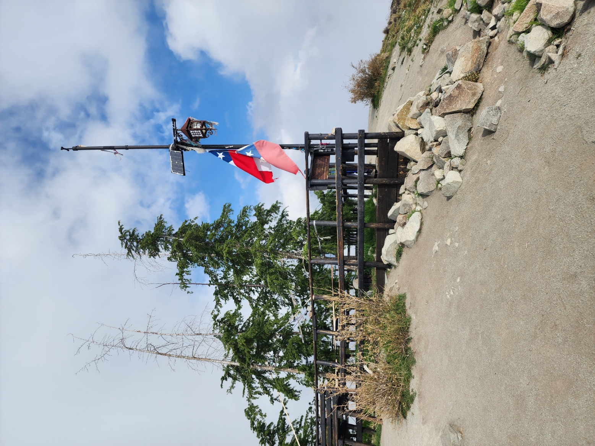
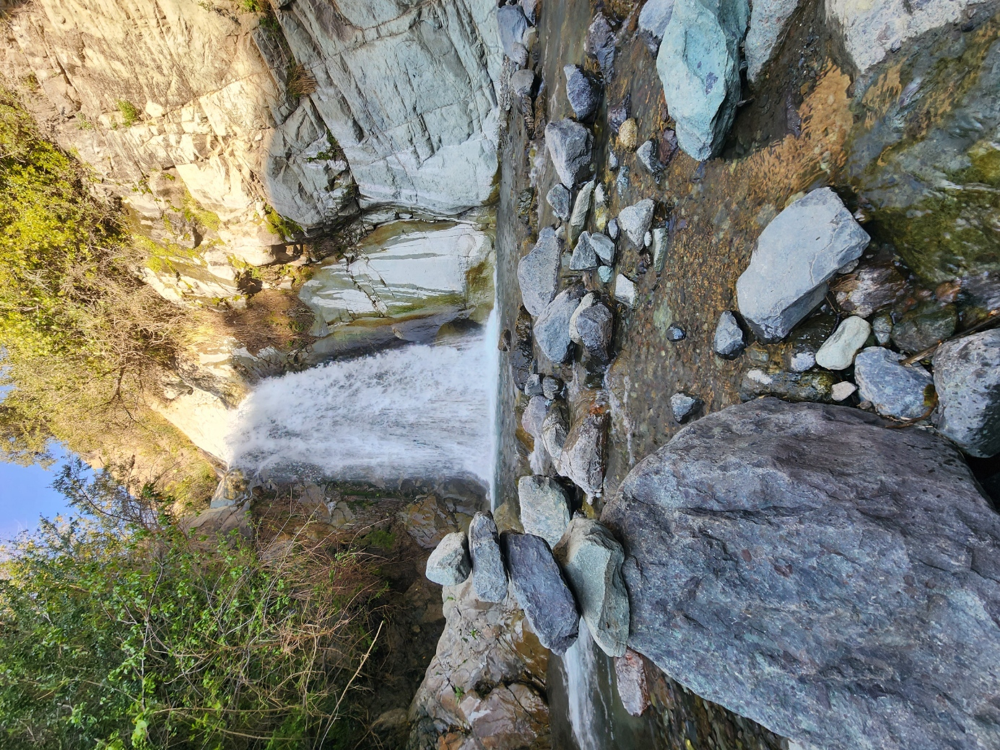
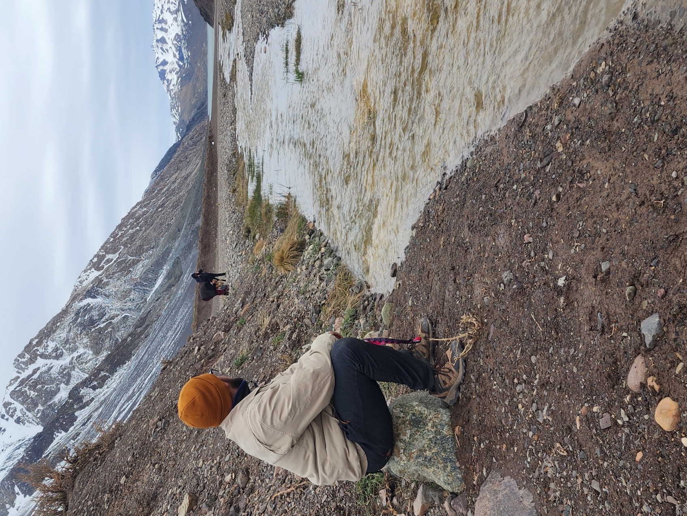

Cerro Alto de las Vizcachas
Dificultad: Moderada-Alta. El mejor lugar para meditar y ver Santiago.

Dificultad: Moderada-Alta. El mejor lugar para meditar y ver Santiago.

Dificultad: Baja-Moderada. Senderos con agua cordillerana y mucha flora nativa.

Dificultad: Fácil. Un panorama familiar para salir de la rutina.